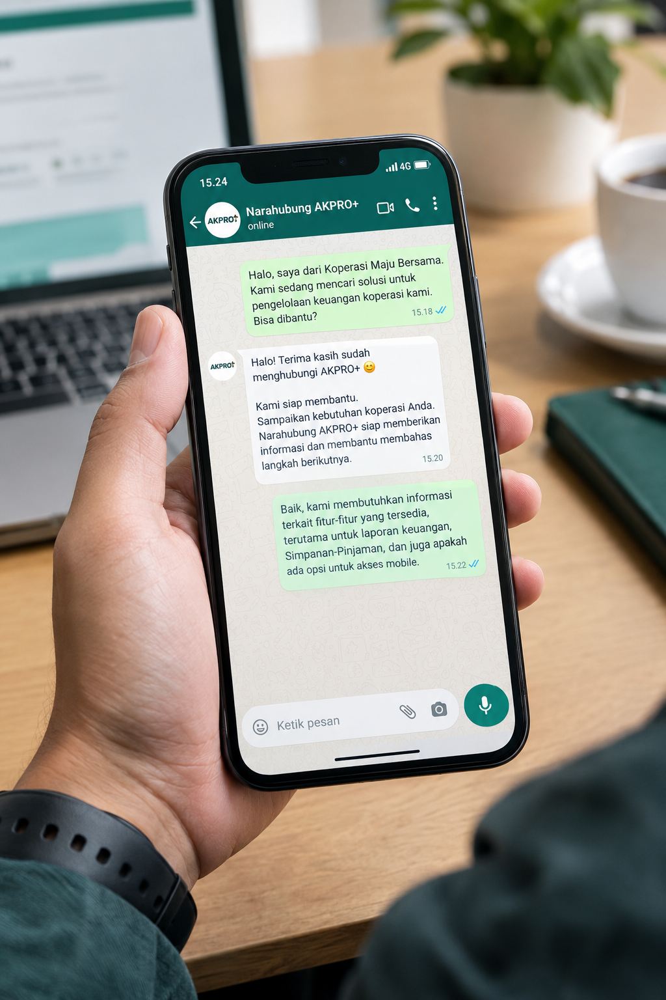

Mari mulai
percakapan.
Sampaikan kebutuhan koperasi Anda. Narahubung AKPRO+ siap memberikan informasi dan membantu membahas langkah berikutnya.
✳
Informasi sesuai kebutuhanSampaikan nama koperasi dan hal yang ingin dibicarakan.

✳Terhubung untuk membahas kebutuhan koperasi
Pilih cara yang paling nyaman
Hubungi narahubung
AKPRO+.
Hubungi kami untuk kebutuhan Anda atau mulai diskusi melalui WhatsApp.
Emailkonsultasi@akproplus.com
Kirim pertanyaan atau ceritakan kebutuhan koperasi Anda melalui Email.
Kirim Email ↗ WHATSAPP AKPRO++62 851-9552-2551Mulai diskusikan dengan kami melalui WhatsApp.
Kirim Pesan WhatsApp ↗✳ Agar kami dapat membantu dengan tepat, silakan sampaikan nama koperasi, peran Anda, dan kebutuhan yang ingin dibahas.
Ingin mengenal lebih dulu?
Kenali AKPRO+ ↗